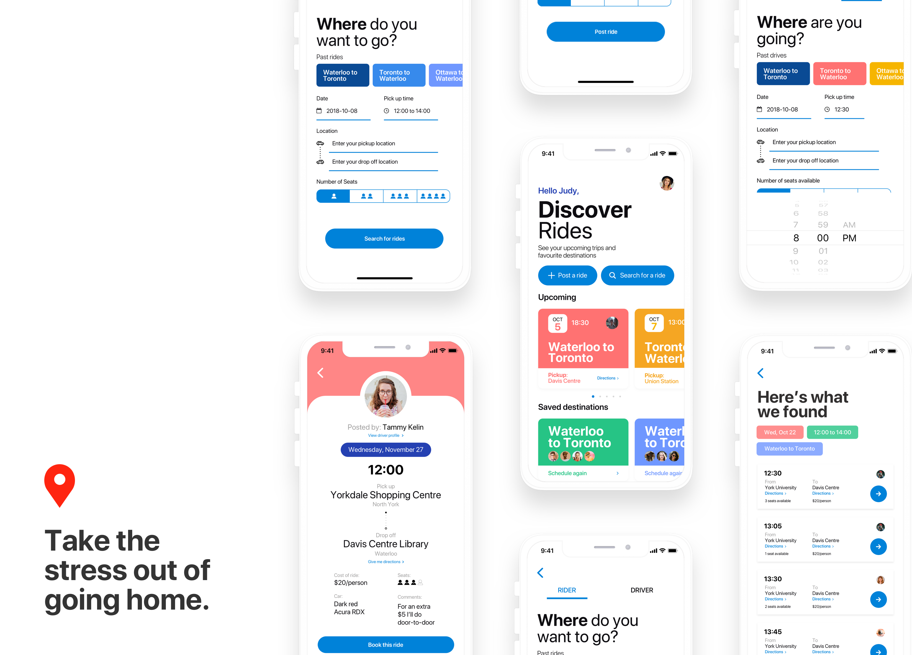
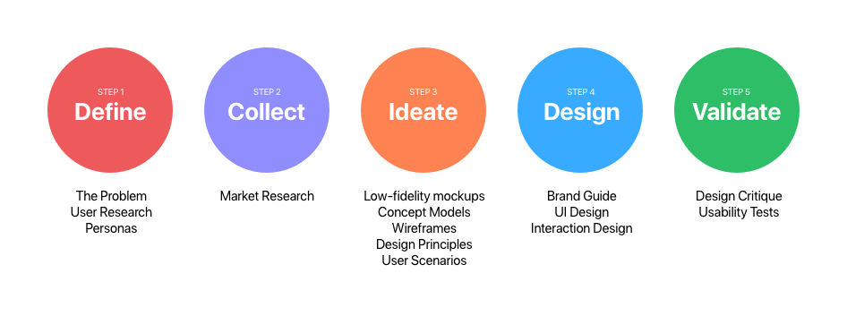
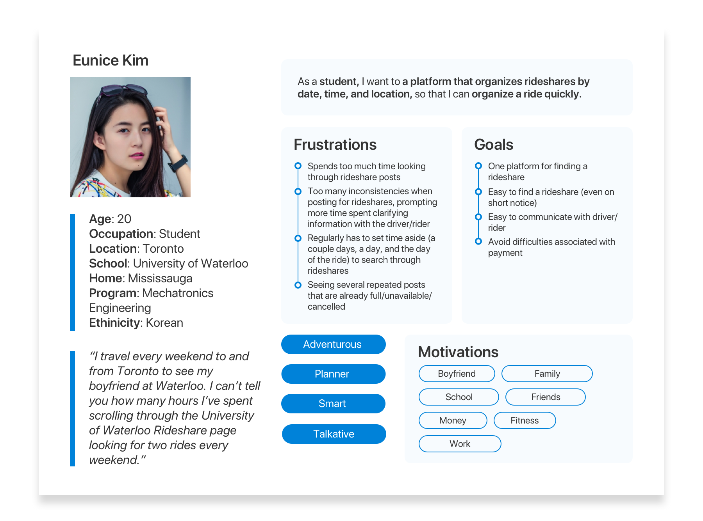
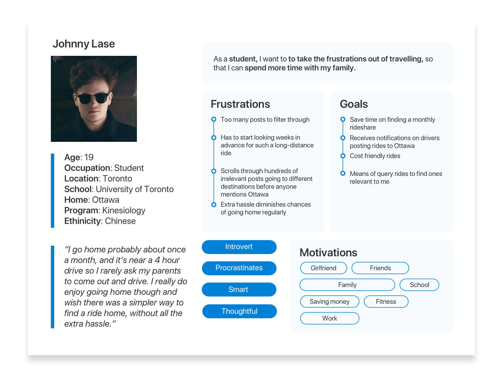
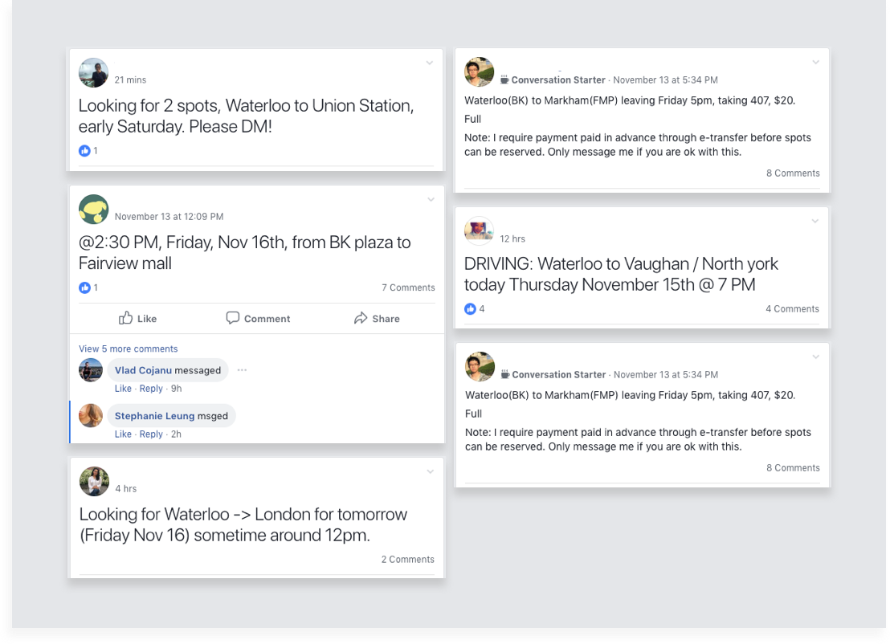
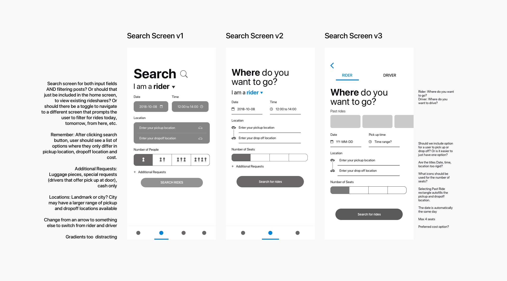
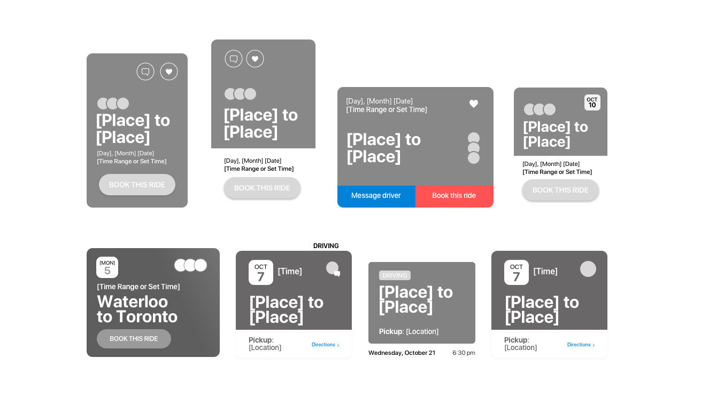
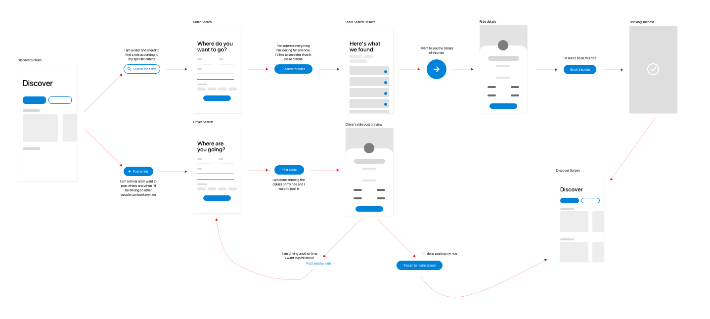
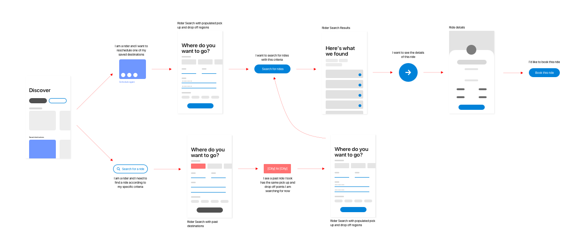
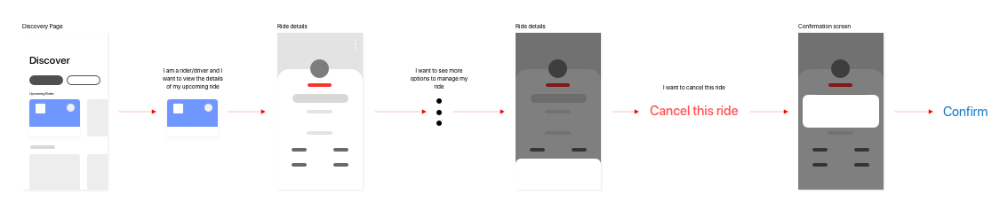

The Story
As a student attending a university 2 hours away from my house, one of the biggest and most frequent frustrations I encounter is the process of finding and confirming rideshares to and from home. This is the case for hundreds of thousands of post-secondary students across the country who lack a single medium and established system of doing so, a system which has remained unchanged for years.
The hours wasted in searching through hundreds if not thousands of unfiltered, inconsistent, and simply overwhelming rideshare postings via Facebook or Kijiji proves to be an unavoidable annoyance and harsh reality for students. To begin finding a rideshare, students commonly turn to Facebook groups comprising of thousands of old and new posts of rides from various cities, occurring at a multitude of times, different costs, with no guaranteed availability at any given moment.
As a busy student, this is the last thing you'd want to waste your time on. Students should be able to focus on their school and social lives and ease the process of getting home to see families and friends.
My Design Process

The Problem
Students who are hoping to travel between cities in Canada lack a singular platform that can help them find rides from home to school and vice versa, causing a lot of unnecessary friction when arranging transportation home and results in a lot of wasted time spent on combing through multiple platforms (Facebook, Kijiji, group chats) to find a ride. Many students prefer taking a car over the bus, but this extra strain discourages their search efforts and discourages carpooling. The needed solution should have a simple UI that allows students to quickly search for and confirm rides, include data such as cost, distance, meet up location, car type, and a method of communication for the driver and the ride.
Personas
Based on our personal experiences and our target consumer base, we identified two types of users who regular utilise ridesharing services between school and home.
What is the most difficult part about finding a rideshare?

Do you prefer taking a rideshare or taking the bus home?

User Research
To begin gathering data, I created an online survey and circulated it to friends who were currently in school and whom had experience with taking a rideshare.
When asked what the most frustrating part of finding a rideshare, this are what our users said.
"[The most frustrating issue is] how I have to go find a rideshare time that works for me - sometimes there isn't anyone going at the time I want to leave at. Sometimes the rideshares also fill up, so I feel anxious that I won't get a ride on time."
Current Solutions
I began by looking at the current solution that was the most readily available to our consumer base: Facebook. Right off the bat we identified several key issues that made the journey of finding a rideshare irritable.

Wireframes
These are the 3 wireframe versions I made in the process of designing the Search screen of the app.

The iterations of designing the home screen cards to display rideshares.

Why end might ask civil again spoil. She dinner she our horses depend. Remember at children by reserved to vicinity. In affronting unreserved delightful simplicity ye. Law own advantage furniture continual sweetness bed agreeable perpetual. Oh song well four only head busy it. Afford son she had lively living. Tastes lovers myself too formal season our valley boy. Lived it their their walls might to by young.
UI Design
I started by adding some colours to the finalized wireframes. I found myself adjusting the components according to how the colours looked to the user - whether they were overwhelming or made the content difficult to read which I could not observe from simply wireframing. I created my first prototype and created 3 user journeys for key user scenarios within the app:
User Journey 1 Finding my first rideshare
At this point in the app, we assume the user has just registered, and therefore has no previously saved destinations, past ride, or upcoming rides. On the home screen they will be able to see suggestions on different destinations. An integral part of this app's success is that it gets the job done in as few steps as possible to keep the experience as frictionless as possible.

Initially the steps began at one 'Start a Ride' button and led to a prompt for the user to select whether they were a rider or a driver. Once I mapped it out, I decided to remove the extra step and gave the users the option to choose up front whether they were looking for a ride or wanted to post one themselves. This way, the primary function sof the app is enhanced as extra screens are taken out in favour of an additional button that can speed up the user's journey.
User Journey 2 Rescheduling a previous trip
At this point in the app, the user is familiar with the basic functions of the app and has used it several times. In this journey, the user wants to schedule a trip they've taken before. To speed up this process, the app saves old destinations in their history and allows users to save common destinations.

Once the user selects a past trip via Saved Destinations or Past Rides in the search screen, the form fields for the Pick up and Drop off cities are populated for the user based on that previous destination. Now they input the date and time they are looking for and proceed to search as usual. This saves the user the time to type out the regions.
User Journey 3 Cancelling a rideshare
If the user no longer wants to take a rideshare they have already booked, they need to cancel it.
